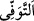
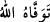
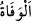
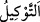

11. De ki: Size vekil kılınan (bu konuda görevlendirilen) ölüm meleği canınızı
alacak, sonra Rabbinize döndürüleceksiniz.
Hakkı açıklamak ve onların bâtıl iddiâlarını reddetmek üzere “De ki: Size” ruhlarınızı
almak ve ecellerinizi sayıp hesaplamak konusunda “vekil kılınan (görevlendirilen)
ölüm meleği canınızı alacak…”
“
” kelimesi, bir şeyi tam olarak almak, demektir. es-Sıhâh’ta şöyle der: “
”
Allah ruhunu kabzetti/aldı; “
” ise ölüm demektir.
“
” başkasına güvenerek onu yerine nâib/vekil tayin etmektir. Birisini bir işte
görevlendirmek, bir kimseye bir iş yüklemektir.
Melek ise, latîf ve nûrânî bir cisimdir. Farklı şekillere girebilir. Muhakkıklardan
birisi şöyle demiştir: “Meleklerden idârî bir vazife üstlenene “melek”, insanlardan
üstlenene ise “melik” denir. Öyleyse her melek melâikedendir, ama her melâike melek
değildir. Bilakis melek, “Andolsun işi düzenleyenlere” (en-Nâziât, 79/5) “Andolsun
işleri ayıranlara” (ez-Zâriyât, 51/4), “Andolsun söküp çıkaranlara” (en-Nâziât, 79/1)
ve benzeri âyetlerde kendilerine işâret edilenlerdir. Melekü’l-mevt/ölüm meleği de
onlardandır.”
Ölüm, hayatın zıddı olarak yaratılmış, varlıkla ilgili bir sıfattır.
Âyetin mânâsı şöyledir: Azrâil, ruhlarınızı geride hiçbir şey bırakmayacak şekilde
kabzeder; yüzlerinize ve sırtlarınıza vurmaktan daha fenâ ve olabilecek en şiddetli
şekilde tastamam olarak ruhlarınızı alır. Ya da Azrâil, hakkında ölüm takdir edilip
yazılan sizden hiçbir kimseyi geride bırakmadan hepinizin ruhlarını alır.
Ölüm meleğinin canını ise Allah Teâlâ alacaktır. Nitekim rivâyet edildiğine göre
Allah Teâlâ -her şeyi en iyi bildiği halde- tüm canlıların ölümünü gerçekleştirdikten
sonra ölüm meleğine: “Yarattıklarımdan kim kaldı?” diye sorar. Melek: “Yâ Rabbi,
kimin kaldığını sen daha iyi bilirsin; ama bu zayıf kulundan başka kimse kalmadı.” der.
Bunun üzerine Allah: “Ey ölüm meleği! Nebîlerime, rasüllerime, velîlerime ve
kullarıma ölümü tattırdın. Ben bütün gaybları çok iyi bilen olduğum halde ezelî
ilmimde şu hüküm verilmiştir: Zâtım hâriç her şey yok olmaya mahkûmdur. İşte şimdi
de sıra sende.” buyurur. Bunun üzerine melek şöyle yalvarır: “İlâhî, şu senin ölüm
meleği kuluna merhamet et ve ona lütfunla muâmelede bulun! Çünkü o zayıftır.” Allah
Sübnânehû Teâlâ: “Sağ elini sağ yanağının altına koy, cennetle cehennem arasına yat
ve canını ver!” buyurur. O da bu şekilde Allâh’ın emriyle ölür.
Bu âyette, yaratılışın gereği olarak ölümün canlılara ârız olan tabiî hallerden biri
olduğunu iddiâ eden kâfirlere bir cevap vardır.
“Sonra Rabbinize döndürüleceksiniz.” Hesaba çekilmek ve yaptıklarınızın karşılığını
almak için yeniden diriltilmek sûretiyle Rabbinize geri çevrileceksiniz. İşte, Allâh’a
kavuşmanın mânâsı budur.
Bilesin ki Allah Teâlâ bu âyette ölüm meleğinin vefât ettiren ve ruhları alan olduğunu
haber vermiştir. Bir yerde canları alanın elçiler, yâni melekler olduğunu (bk. el-En‘âm,